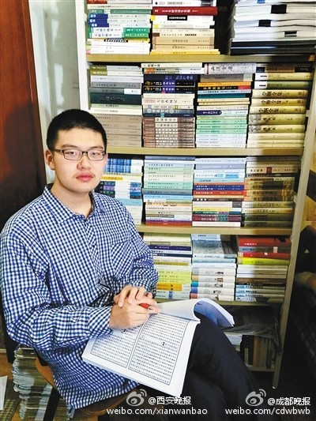

太可惜了。天才还没有完全崭现就离世界而去了。自杀前还吃了抑郁症的药，做完了作业。这要是侦探推理片，一定会被侦探说成是怀疑是否是自杀的疑点吧。@成都晚报:【西安“天才中学生”高考前自杀 曾著数十万字史学专著】24日，西安中学18岁高三学生林嘉文自杀身亡。西安中学工作人员称，其生前在吃药控制抑郁症。林嘉文曾撰写出版两本历史专著，广受好评。著名史学家李裕民曾盛赞林嘉文：“他的水平，一般的博士也达不到”。(华商报)西安18岁史学奇才 因抑郁症离世 
 西安18岁史学奇才 因抑郁症离世
西安18岁史学奇才 因抑郁症离世